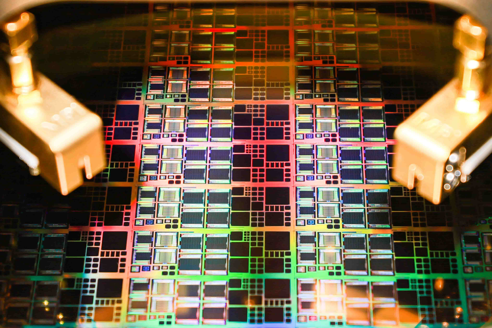
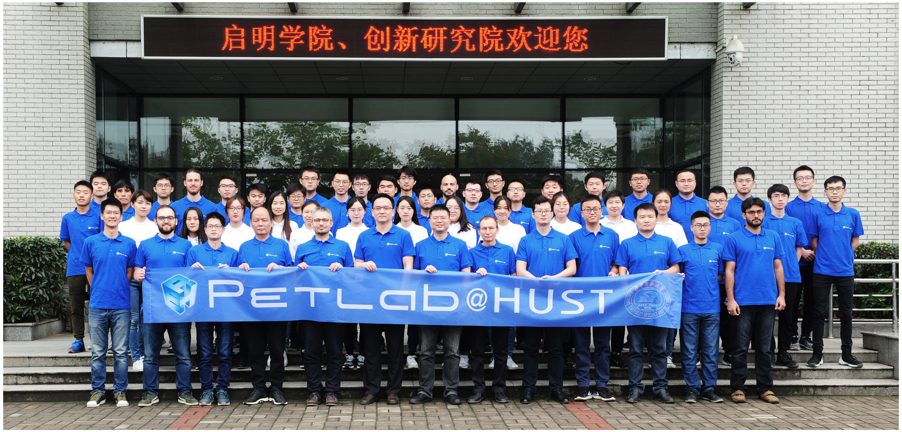
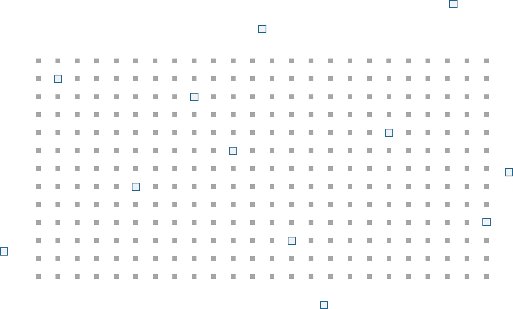
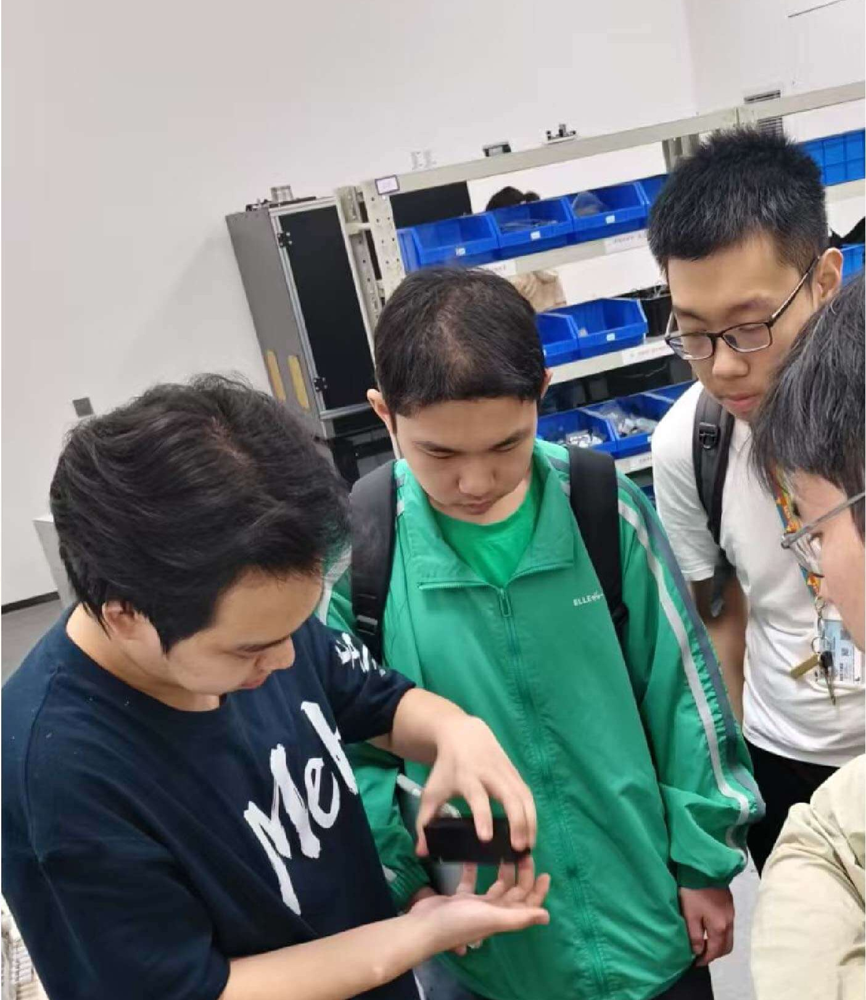
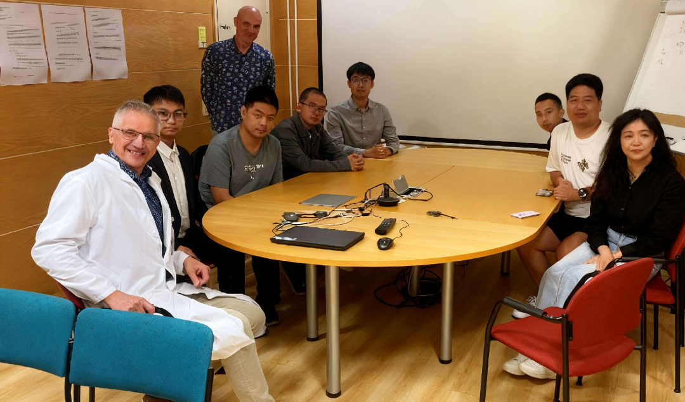

面向国家核心战略需求
自2004年建室以来，数字PET实验室始终围绕国家战略重点任务、产业关键技术瓶颈与重大公共卫生难题开展研究。实验室构建起覆盖基础研究、技术创新、临床转化与产业应用的全链条创新体系，助力实现高水平科技自立自强，支撑国家战略发展。
学术影响科学研究
从光子出发，洞悉生命精微图景
数字 PET 实验室布局底层核心技术专项，深耕全数字 PET 技术创新，推动通用成像架构向专用化系统、精准诊疗方案迭代演进，持续拓展 PET 设备在临床诊疗与前沿科研领域的应用边界。

科学研究
数字 PET 实验室以探索性基础科学为研究主线，主攻高灵敏探测、超高时间分辨、动态定量成像等关键核心技术。上述技术突破可显著提升微弱信号探测能力与定量成像精度，为精准分子影像研究筑牢底层技术支撑。

核心能力
数字 PET 实验室搭建具备国际领先水平的科研平台，推动学界、科研机构与产业端构成的全数字 PET 创新生态开展跨领域协同攻关。该平台可支撑一套标准化、严谨化、可溯源的科研体系，持续拓展可规模化落地的全数字 PET 应用场景。

科研团队
数字 PET 实验室汇聚硬件、软件及应用方向科研人员，共同完成全数字 PET 成像系统的研发、性能验证与运行调试；同时依托系统性能优势挖掘多元应用场景，适配现有临床需求与前沿新兴研究方向。
重点专项
实验室以自身使命为指引，联动国内外广大科研共同体，推进多项跨学科核心专项研究，统筹整合各领域专业技术力量与科研资源。其中一项专项工作，是将实验室自研成像系统与核心技术应用于质子治疗剂量监测领域。
质子治疗监测
科研合作
本实验室诚挚邀约全球科研同仁携手开展前沿探索，共同推进交叉学科创新联合研究。

本科生实践培育计划
本科生实践培育计划（UPOP）为数字PET实验室大二学生专属课外职业素养培育项目。该项目旨在锤炼学生核心专业综合能力，使其无论后续投身产业研发、科研院所还是高等学术领域，均能在选定的职业赛道长足发展。
了解更多